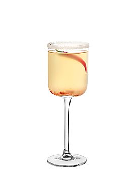

Daring | Spicy | Fruity
Not for the faint of mouth
This cocktail has no ties with any famous martial artist, but if you're caught off-guard, and you have low tolerance for spicy heat, you may find yourself reeling like you have been hit by its slightly more violent namesake.
However, if you appreciate a little bit of spice, or you are looking for a unique gustatory experience, then consider treating yourself to a piquant, yet refreshing, One-Inch Punch.
The Punch combines the sweetness of pineapple with the heat of chili peppers, in an unconventional marriage of flavour that can be both perplexing and oddly addictive. Your taste buds are first greeted by the fresh fruity taste. The pineapple is cool and sweet. Next, the chili starts to radiate heat. Initially, it is only subtle, but the coolness gradually fades. Almost all at once, you feel the spice all around your mouth and throat. It is not greatly discomforting, but it is enough to make you crave another sip to restore the sweet freshness you felt at the start.
So the cycle continues until you reach the end of your glass (and perhaps start another 😉).
Rim the edge of a flute glass with sugar.
To a shaker, add simple syrup and chili paste.
Start with about half a teaspoon of paste. Increase, as desired, for a spicier drink.
Add vodka, citrus liqueur and pineapple juice and ice.
Shake vigorously for 15 seconds
Strain into the glass using an ice strainer.
Garnish with chili flakes.